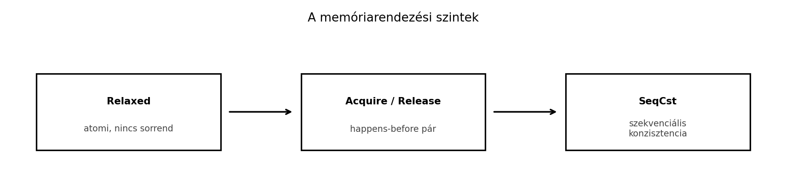

C++-ban a std::atomic<T> és a
std::memory_order évek óta ismerős, mégis a legtöbb kódban
memory_order_seq_cst marad, mert „az a legerősebb”. Ez
sokszor fölöslegesen drága, máskor pedig a relaxed
használata vezet finom, csak ritkán jelentkező adatversenyhez. A Rust
ugyanazt a memóriamodellt használja, mint a C++20, de az atomikus
típusai a biztonságos Rust részei: a fetch_add és a
load nem igényel unsafe blokkot. Ez nem
jelenti azt, hogy a memóriarendezés kérdése eltűnik; a
Ordering érték kiválasztása ugyanúgy tervezési döntés, mint
C++-ban.
Definíció (atomikus típus). Az
AtomicBool, AtomicUsize,
AtomicU64 és hasonló típusok olyan, belsőleg szinkronizált
értékek, amelyeken az egyes műveletek megszakíthatatlanul hajtódnak
végre, és a fordító a megadott Ordering korlátai szerint
rendezheti át őket más memóriaműveletekkel. A Rustban ezek a
std::sync::atomic modulban élnek.
Definíció (happens-before). Ha egy
Release rendezésű tárolás szinkronizál egy
Acquire rendezésű betöltéssel ugyanazon az atomikus
objektumon, akkor a tárolás előtt végrehajtott összes írás
happens-before a betöltés utáni összes olvasáshoz képest. A
szinkronizáció feltétele, hogy az Acquire betöltés
pontosan azt az értéket figyelje meg, amelyet a
Release tárolás írt (vagy annak release
sequence-éből egy későbbit); ha a betöltés még a régi értéket
látja, nincs happens-before, és az olvasó nem tehet fel semmit az író
korábbi írásairól. A happens-before reláció tranzitív, és ez teremti meg
a több szál közötti megfigyelhető sorrendet.
Adatverseny és versenyhelyzet. Ne keverjük össze a
két fogalmat. Az adatverseny (data race) szinkronizálatlan,
ütköző (legalább az egyik író) nem atomi memóriahozzáférés: C++-ban UB,
safe Rustban a típusrendszer kizárja. A versenyhelyzet (race
condition) logikai hiba, amelyben az eredmény az események sorrendjétől
függ; safe Rustban atomikusokkal vagy zárakkal is előfordulhat. A
fordító az atomikus típusát ellenőrzi, a Ordering
helyességét nem: egy helyes típusú, de rossz rendezésű algoritmus
(például Relaxed zászló egy másik adat publikálására)
lefordul, és csak futás közben, ritkán hibázik, tehát nem fordításkor
kizárt hiba.
Szabály. A Rust memóriamodell a C++20 memóriamodellt
követi. A std::sync::atomic::Ordering értékei a
következőképpen felelnek meg a C++ std::memory_order
értékeinek:
Rust Ordering |
C++ memory_order |
Alkalmazható műveletek | Garancia |
|---|---|---|---|
Relaxed |
memory_order_relaxed |
bármely | atomikusság, nincs sorrendi korlát |
Acquire |
memory_order_acquire |
load |
a load utáni műveletek nem mozognak elé |
Release |
memory_order_release |
store |
a store előtti műveletek nem mozognak mögé |
AcqRel |
memory_order_acq_rel |
fetch_add, compare_exchange stb. |
Release és Acquire együtt |
SeqCst |
memory_order_seq_cst |
bármely | szekvenciális konzisztencia |
A táblázat a tipikus párosítást mutatja. A fetch_add és
a compare_exchange (read-modify-write)
Acquire, Release, AcqRel és
Relaxed rendezést is fogadhat; ilyenkor a művelet egyik
fele (például Release RMW-nél a betöltés)
Relaxed jellegű. A compare_exchange külön
failure ordering paramétert kap (nem lehet
Release/AcqRel).
A C++ memory_order_consume megfelelője a stabil Rustban
nincs; a C++-ban is kerülendő, mert a szemantikája a gyakorlatban
bizonytalan.

A fenti ábra a három gyakorlatban használt rendezési szintet mutatja.
A Relaxed csak azt garantálja, hogy a művelet atomikus,
tehát például egy számláló növelése nem veszíti el a másik szál által
ugyanabban a pillanatban elvégzett növelést. Az
Acquire/Release pár már sorrendet teremt a
tárolás előtti és a betöltés utáni műveletek között. A
SeqCst minden szál számára egyetlen közös sorrendet állít
fel, és ezért a legkönnyebben érvelhető, de gyakran fölöslegesen
erős.
Szabály. Atomikus számlálóhoz, ahol csak a végső
érték számít, a Relaxed rendezés elegendő. Ha az atomikus
érték egy másik, nem atomikus adat láthatóságát jelzi,
Release tárolást és Acquire betöltést kell
párosítani.
A legegyszerűbb atomikus számláló C++-ban:
#include <atomic>
#include <thread>
#include <cassert>
std::atomic<int> counter{0};
void increment(int n) {
for (int i = 0; i < n; ++i) {
counter.fetch_add(1, std::memory_order_relaxed);
}
}
int main() {
std::thread t1(increment, 10'000);
std::thread t2(increment, 10'000);
t1.join();
t2.join();
assert(counter.load(std::memory_order_relaxed) == 20'000);
}A Rust megfelelő:
use std::sync::atomic::{AtomicUsize, Ordering};
use std::thread;
fn main() {
let counter = AtomicUsize::new(0);
thread::scope(|s| {
s.spawn(|| {
for _ in 0..10_000 {
counter.fetch_add(1, Ordering::Relaxed);
}
});
s.spawn(|| {
for _ in 0..10_000 {
counter.fetch_add(1, Ordering::Relaxed);
}
});
});
assert_eq!(counter.load(Ordering::Relaxed), 20_000);
}A különbség itt nem a memóriamodell, hanem a nyelvi környezet. A Rust
atomic műveletei biztonságosak, míg C++-ban az
std::atomic használatával a programozó felel azért, hogy
minden memóriaműveletet a megfelelő szinkronizáció védjen. A
thread::scope a Rust-ban garantálja, hogy a szálak a scope
végére befejeződnek, ezért nem kell join() hívás; a C++-ban
a std::jthread hasonló célt szolgál.
A Relaxed rendezés önmagában nem teremt
happens-before-t, ezért nem elegendő egy másik adat láthatóságának
jelzésére. A következő kód lefordul, de a Relaxed rendezésű
ready zászló miatt a payload értéke nem
garantáltan 42:
use std::sync::atomic::{AtomicBool, AtomicUsize, Ordering};
use std::thread;
fn main() {
let ready = AtomicBool::new(false);
let payload = AtomicUsize::new(0);
thread::scope(|s| {
s.spawn(|| {
payload.store(42, Ordering::Relaxed);
ready.store(true, Ordering::Relaxed); // helytelen: Relaxed zászló
});
s.spawn(|| {
while !ready.load(Ordering::Relaxed) {
std::hint::spin_loop();
}
// Nem garantált, hogy a payload 42 látszik.
assert_eq!(payload.load(Ordering::Relaxed), 42);
});
});
}A hiba oka: a ready Relaxed tárolása és betöltése nem
hoz létre happens-before-t, így a payload Relaxed írása a
másik szál szerint a ready betöltése után is
végrehajtódhat. A javítás:
use std::sync::atomic::{AtomicBool, AtomicUsize, Ordering};
use std::thread;
fn main() {
let ready = AtomicBool::new(false);
let payload = AtomicUsize::new(0);
thread::scope(|s| {
s.spawn(|| {
payload.store(42, Ordering::Relaxed);
ready.store(true, Ordering::Release); // Release
});
s.spawn(|| {
while !ready.load(Ordering::Acquire) { // Acquire
std::hint::spin_loop();
}
// Most már garantált: a Release-Acquire pár miatt
// a payload.store happens-before a payload.load előtt.
assert_eq!(payload.load(Ordering::Relaxed), 42);
});
});
}Itt a ready Release tárolása szinkronizál az Acquire
betöltéssel, ezért az író szál payload.store-ja
happens-before az olvasó szál payload.load-jához képest. A
payload maga maradhat Relaxed, mert a sorrendet a zászló
garantálja.
Az alábbi ábra a két program eseményeit és a köztük lévő éleket
mutatja: Relaxed zászlóval csak a reads-from (rf) él köti össze a két
szálat, ezért nincs happens-before, és az R2 olvasás a
0 kezdőértéket is láthatja; a Release/Acquire párnál a
synchronizes-with (sw) él miatt W1 happens-before
R2, így R2 csak 42 lehet. (Egy
x86-os futtatás mindkét változatban tipikusan 42-t ad, mert a hardver
erősebb a nyelvi modellnél; a különbség a modellben van.)
A compare_exchange művelet akkor hasznos, ha egy
atomikus értéket csak akkor akarunk megváltoztatni, ha az aktuális
értéke egyezik egy elvárt értékkel. Két feladatot kell azonban
szétválasztani: az egyszeri munka kiválasztását (ki
inicializál) és a befejezett inicializálás publikálását
(mikor láthatják mások az eredményt). A következő zászló az elsőt oldja
meg:
use std::sync::atomic::{AtomicBool, Ordering};
static CLAIMED: AtomicBool = AtomicBool::new(false);
fn try_claim() -> bool {
// Pontosan egy szál kap `true`-t: ő végzi az egyszeri munkát.
CLAIMED.compare_exchange(false, true, Ordering::AcqRel, Ordering::Acquire).is_ok()
}Ez a zászló nem publikálja a kész inicializálást: a
többi szál true-t láthat, mielőtt a nyertes befejezte a
munkát, tehát késznek jelölt, de még nem inicializált adatot olvashatna.
Valódi egyszeri értékhez a standard könyvtár OnceLock-ja
való, amely a befejezett inicializálást megfelelő
Release/Acquire párral publikálja, és
mindenkinek ugyanazt a kész értéket adja (ellenőrzött: több szálról is
csak egyszer fut le az inicializáló):
use std::sync::OnceLock;
static CONFIG: OnceLock<String> = OnceLock::new();
fn config() -> &'static str {
CONFIG.get_or_init(|| "alapérték".to_string()) // egyszer fut, a többiek megvárják az eredményt
}Kézi állapotgép alternatívája három állapot (0 = nincs,
1 = folyamatban, 2 = kész), ahol a végső
2-t Release tárolással írja a nyertes az adat
elkészülte után, a többiek pedig Acquire betöltéssel várják
a 2-t.
A compare_exchange_weak az Ok ágon
megváltoztatja az értéket, ha az még a várt current; az
Err ágon visszaadja az aktuális értéket, és a ciklus
újrapróbálja. A gyenge változat néha akkor is hibázhat, ha az érték
egyezik, ezért mindig ciklusban kell használni.
Kódblokk — részlet
(use std::sync::atomic::{AtomicU64, Ordering}; szükséges) ·
futtatva: rustc 1.99.1; négy szál 0..4000 értékkel 3999-et
ad
fn fetch_max(max: &AtomicU64, value: u64) -> u64 {
let mut current = max.load(Ordering::Relaxed);
loop {
if value <= current {
return current;
}
match max.compare_exchange_weak(current, value, Ordering::Relaxed, Ordering::Relaxed) {
Ok(prev) => return prev,
Err(actual) => current = actual,
}
}
}C++-ban a compare_exchange_weak a referenciaként átadott
expected-et írja felül; Rustban az aktuális érték az
Err ágban jön vissza, ezt kell a következő próbához
current-be tenni. (A std-ben ugyanerre kész
fetch_max és fetch_update is van.)
Munkakönyvtár: ~/rust-labor/rkv
Az rkv szervernek hamarosan szüksége lesz műveleti statisztikákra,
például arra, hogy hány GET, SET,
DEL és LIST parancs érkezett. A
Mutex túlzás lenne egyetlen számlálóhoz; atomikus
típusokkal a Stats típus Sync lesz. A kiinduló
állapot a Mutex, RwLock, csatornák és a megosztott
rkv ellenőrzési pontja: a szálbiztos burkoló a meglévő
SharedStore (rkv-core/src/shared.rs),
amely bármely Storage-implementációt
(MemStore, FileStore) burkol; a statisztikát
ehhez adjuk hozzá, nem egy új tárolótípushoz.
rkv-core/src/stats.rs fájlt:Kódblokk — fájl: rkv-core/src/stats.rs ·
művelet: új fájl · ellenőrzés: cargo build -p rkv-core
use std::sync::atomic::{AtomicU64, Ordering};
#[derive(Debug, Default)]
pub struct Stats {
get_count: AtomicU64,
set_count: AtomicU64,
delete_count: AtomicU64,
list_count: AtomicU64,
}
impl Stats {
pub(crate) fn record_get(&self) {
self.get_count.fetch_add(1, Ordering::Relaxed);
}
pub(crate) fn record_set(&self) {
self.set_count.fetch_add(1, Ordering::Relaxed);
}
pub(crate) fn record_delete(&self) {
self.delete_count.fetch_add(1, Ordering::Relaxed);
}
pub(crate) fn record_list(&self) {
self.list_count.fetch_add(1, Ordering::Relaxed);
}
pub fn get_count(&self) -> u64 {
self.get_count.load(Ordering::Relaxed)
}
pub fn set_count(&self) -> u64 {
self.set_count.load(Ordering::Relaxed)
}
pub fn delete_count(&self) -> u64 {
self.delete_count.load(Ordering::Relaxed)
}
pub fn list_count(&self) -> u64 {
self.list_count.load(Ordering::Relaxed)
}
}Itt a Relaxed rendezés elegendő, mert a számlálók
önmagukban atomikusak, és nincs más adat, amelynek a láthatóságát a
számlálóval kellene szinkronizálni.
rkv-core/src/lib.rs-ben:Kódblokk — fájl: rkv-core/src/lib.rs · művelet:
beillesztés a pub mod sorok közé és a pub use
sorok után · ellenőrzés: cargo build -p rkv-core
pub mod stats;
pub use stats::Stats;SharedStore-hoz a stats mezőt, és
minden művelet (a set, get,
delete, list és az apply) növelje
a megfelelő számlálót. A Stats Arc-ban van,
mert a SharedStore klónjainak közösen kell számolniuk; a
stats() getter egy Arc<Stats>-ot ad,
amelyet a későbbi naplózó és lekérdező réteg megtarthat. A számláló a
művelet megkísérlésekor nő (a sikertelen műveletek is
számítanak), a zár megszerzése előtt, így a számlálás a zárat nem
hosszabbítja. Mivel a SharedStore bármely háttérre épül, a
FileStore is automatikusan statisztikát kap, külön migráció
nélkül.Kódblokk — fájl: rkv-core/src/shared.rs ·
művelet: teljes csere (a Mutex, RwLock, csatornák és
a megosztott rkv alfejezetbeli változat a stats
mezővel, a stats() getterrel és a számlálókkal bővítve) ·
ellenőrzés: cargo build -p rkv-core
use std::sync::{Arc, Mutex, MutexGuard};
use crate::{apply, Command, Error, Response, Result, Stats, Storage};
/// Szálak között megosztható tároló: bármely `Storage` implementációt burkol.
#[derive(Clone)]
pub struct SharedStore {
inner: Arc<Mutex<Box<dyn Storage + Send>>>,
stats: Arc<Stats>,
}
impl SharedStore {
pub fn new(store: impl Storage + Send + 'static) -> Self {
Self {
inner: Arc::new(Mutex::new(Box::new(store))),
stats: Arc::new(Stats::default()),
}
}
/// A zár megszerzése. Ha egy korábbi szál pánikolt a zár alatt, a zár mérgezett.
/// Az absztrakció alapértelmezése a *hiba*: tetszőleges `Storage` invariánsait
/// egy pánik megsérthette (például egy félig lefutott, nem naplózott módosítás),
/// ezért nem folytatunk automatikusan. Helyreállításhoz a hívónak új tárolót kell
/// nyitnia (a `FileStore` a naplóból visszaépíti az állapotát).
fn lock(&self) -> Result<MutexGuard<'_, Box<dyn Storage + Send>>> {
self.inner.lock().map_err(|_| {
Error::Io(std::io::Error::other(
"a megosztott tároló mérgezett: egy szál pánikolt a zár alatt",
))
})
}
/// A műveleti statisztika (a klónok közösen számolnak).
pub fn stats(&self) -> Arc<Stats> {
Arc::clone(&self.stats)
}
pub fn set(&self, key: String, value: Vec<u8>) -> Result<()> {
self.stats.record_set();
self.lock()?.set(key, value)
}
pub fn get(&self, key: &str) -> Result<Option<Vec<u8>>> {
self.stats.record_get();
self.lock()?.get(key)
}
pub fn delete(&self, key: &str) -> Result<bool> {
self.stats.record_delete();
self.lock()?.delete(key)
}
pub fn list(&self, prefix: Option<&str>) -> Result<Vec<(String, Vec<u8>)>> {
self.stats.record_list();
self.lock()?.list(prefix)
}
/// Egy parancs végrehajtása egyetlen zárfoglalással.
pub fn apply(&self, command: &Command) -> Result<Response> {
match command {
Command::Get(_) => self.stats.record_get(),
Command::Set(..) => self.stats.record_set(),
Command::Delete(_) => self.stats.record_delete(),
Command::List(_) => self.stats.record_list(),
}
let mut guard = self.lock()?;
apply(&mut **guard, command)
}
/// A tárolt kulcsok száma és listája (egyetlen zárfoglalással).
pub fn report(&self) -> Result<String> {
let keys: Vec<String> = self.list(None)?.into_iter().map(|(k, _)| k).collect();
Ok(format!("A tárolóban {} kulcs van: {:?}", keys.len(), keys))
}
}Kódblokk — fájl: rkv-core/tests/stats.rs ·
művelet: új fájl · ellenőrzés:
cargo test -p rkv-core --test stats
use std::thread;
use rkv_core::{Command, MemStore, SharedStore};
#[test]
fn stats_count_operations_across_clones_and_threads() {
let store = SharedStore::new(MemStore::new());
let handles: Vec<_> = (0..4)
.map(|i| {
let store = store.clone();
thread::spawn(move || {
for j in 0..250 {
store.set(format!("k{i}-{j}"), vec![1]).unwrap();
}
})
})
.collect();
for h in handles {
h.join().unwrap();
}
store.get("k0-0").unwrap();
store.delete("k0-0").unwrap();
store.list(None).unwrap();
store.apply(&Command::Get("k1-1".into())).unwrap(); // az apply is számol
let stats = store.stats();
assert_eq!(stats.set_count(), 1000);
assert_eq!(stats.get_count(), 2);
assert_eq!(stats.delete_count(), 1);
assert_eq!(stats.list_count(), 1);
}cd ~/rust-labor/rkv
cargo test -p rkv-coreVárt kimenet: a meglévő tesztek mellett az új statisztikai teszt is zöld.
A számlálók jelentése. A számlálókat a
SharedStore metódusai növelik az eredmény előtt: a
közvetlen SharedStore::set/get és az apply
hívások is számítanak, a report belső list-je
is növeli a list_count-ot. Ezért nem hálózaton érkezett
parancsok száma és nem sikerességi metrika.
Ellenőrzési pont. Az rkv-core
exportálja a Stats típust; a SharedStore
stats() getterrel és számlálókkal bővült; a
cargo test -p rkv-core --test stats zöld.
Továbbvitt eredmény. Az itt bevezetett
Stats típus atomikus számlálókkal (get_count,
set_count, delete_count,
list_count) készül. Ezt a típust fogja használni a Naplózás és megfigyelhetőség: tracing alfejezet a
műveleti metrikák kiírásához,.
Minden atomikus műveletet SeqCst-tel
írni. A SeqCst a legerősebb rendezés, és a legtöbb
platformon drágább, mint a Relaxed vagy az
Acquire/Release. Ha csak egy számlálót
növelsz, a Relaxed elég; ha zászlóval szinkronizálsz, a
Release/Acquire pár a megfelelő.
Relaxed használata függő adatokhoz.
Amikor egy atomikus zászló jelzi, hogy egy másik adat készen áll, a
zászlón Release tárolást és Acquire betöltést
kell használni. A Relaxed-del az olvasó a zászlót késznek
láthatja, miközben a másik adat írása még nem látszik: ez safe Rustban
(ahol a másik adat is atomikus, mint a fenti példában) logikai
versenyhelyzet, unsafe-fal megosztott nem atomi adatnál
pedig adatverseny, azaz UB.
Atomikusokkal kiváltani a Mutex-et összetett
invariánsoknál. Ha egy invariáns több mezőt vagy objektumot
érint, a Mutex sokkal egyszerűbb és gyakran nem is lassabb.
Az atomikus típusok akkor jók, ha az állapot egyetlen, jól elkülöníthető
érték.
A compare_exchange hibás újrapróbálási
ciklusa. A compare_exchange_weak esetén a
current változót frissíteni kell az Err ágon,
különben a következő próba ugyanazzal az elavult értékkel dolgozik.
Ordering-et
választanál egy olyan atomikus számlálóhoz, amelyet csak
teljesítménymetrikák gyűjtésére használsz, és miért?std::atomic<int> példát úgy, hogy a számláló
static COUNTER: AtomicUsize legyen, a szálakat
thread::spawn-nal (nem scope-pal) indítsd egy N elemű
ciklusban, és a join után ellenőrizd az N·10 000 értéket.
Indokold, miért nem kell Arc.Stats típust egy total() metódussal, amely a
négy számláló összegét adja, és írj tesztet, amely több szálból
futtatott műveletek után a SharedStore::stats().total()
értékét ellenőrzi. Gondold végig, miért nem garantálja az összeg
pontosságát egy másik szálban futó, közben történő kiolvasás (a
Relaxed rendezés csak az egyes számlálók atomi voltát
ígéri).payload legyen nem atomikus Vec<u32>,
amelyet az író szál tölt fel. Publikáld a másik szálnak (a) egy
OnceLock<Vec<u32>>-ba, illetve (b) egy
AtomicBool + Release/Acquire
zászlóval jelzett
Mutex<Option<Vec<u32>>>-ba, majd
hasonlítsd össze a két megoldást.A Relaxed rendezést érdemes választani, mert a
számláló önmagában atomikus, és nem szinkronizál más adatokat. A
Relaxed csak a megszakíthatatlan növelést garantálja, ami a
metrika pontos összegéhez elég; a sorrendi korlátok hiánya itt nem
jelent hibát.
A Rust változat egy static atomikussal; a
static 'static élettartamú, ezért
thread::spawn-nal (nem scope-pal) indított szálak is
elérik, és Arc sem kell hozzá:
Kódblokk — önálló példa · futtatva: rustc 1.99.1, sikeresen lefut
use std::sync::atomic::{AtomicUsize, Ordering};
use std::thread;
static COUNTER: AtomicUsize = AtomicUsize::new(0);
fn main() {
const N: usize = 8;
let handles: Vec<_> = (0..N)
.map(|_| {
thread::spawn(|| {
for _ in 0..10_000 {
COUNTER.fetch_add(1, Ordering::Relaxed);
}
})
})
.collect();
for h in handles {
h.join().unwrap();
}
assert_eq!(COUNTER.load(Ordering::Relaxed), N * 10_000);
}A static COUNTER minden szálból elérhető referencia
nélkül, a join után a főszál a Relaxed
számlálók végső értékét már biztosan látja (a join
happens-before kapcsolatot létesít). Az Arc megosztott
tulajdonlásra kellene egy dinamikusan létrehozott értéknél; a
static programéletű, ezért itt fölösleges.
total() metódus a négy getter összege:impl Stats {
/// A négy számláló összege. Nem pillanatkép: párhuzamos műveletek közben
/// a négy `load` egymás után fut, ezért az összeg átmeneti állapotot tükrözhet.
pub fn total(&self) -> u64 {
self.get_count() + self.set_count() + self.delete_count() + self.list_count()
}
}A teszt (nem futtatott, a labor az rkv munkafában
készül):
Kódblokk — fájl: rkv-core/tests/stats.rs ·
művelet: beillesztés a fájl végére · ellenőrzés:
cargo test -p rkv-core --test stats → 2 sikeres teszt
#[test]
fn total_sums_all_counters() {
let store = SharedStore::new(MemStore::new());
let handles: Vec<_> = (0..4)
.map(|i| {
let s = store.clone();
thread::spawn(move || {
for j in 0..250 {
s.set(format!("t{i}-{j}"), vec![]).unwrap();
}
})
})
.collect();
for h in handles {
h.join().unwrap();
}
assert_eq!(store.stats().total(), 1000);
// A get és a list is beleszámít az összegbe.
store.get("t0-0").unwrap();
store.list(None).unwrap();
assert_eq!(store.stats().total(), 1002);
}A teszt: négy szál 250–250 set-et futtat, a szálak
befejezése (join) után a fő szál
store.stats().total() értéke pontosan 1000. A
join happens-before kapcsolatot létesít a szálak és a fő
szál között, ezért a Relaxed számlálók végső értéke ekkor
már biztosan látszik. Egy még futó szál mellett kiolvasott
összeg viszont nem pillanatkép: a négy atomi load közt a
számlálók változhatnak, így az összeg átmeneti, soha nem létezett
állapotot is mutathat. A Relaxed rendezés az egyes
számlálók atomi voltát ígéri, nem a közöttük lévő összefüggést. A
Stats mezői AtomicU64 típust használnak, a
record_* metódusok fetch_add-dal növelnek, a
getterek load-dal olvasnak.
OnceLock-kal: a set
egyszer, az olvasó wait-tel vár (blokkol), a
OnceLock pedig Release/Acquire kapcsolatot teremt, így a
Vec tartalma biztonságosan látszik. Futtatva: rustc
1.99.1.use std::sync::OnceLock;
use std::thread;
static PAYLOAD: OnceLock<Vec<u32>> = OnceLock::new();
fn main() {
thread::scope(|s| {
s.spawn(|| {
PAYLOAD.set((0..1000).collect()).unwrap();
});
s.spawn(|| {
let data = PAYLOAD.wait(); // blokkol, amíg az író be nem állította
assert_eq!(data.len(), 1000);
assert_eq!(data[999], 999);
});
});
}A (b) megoldás zászlóval és Mutex-szel:
use std::sync::atomic::{AtomicBool, Ordering};
use std::sync::Mutex;
use std::thread;
fn main() {
let ready = AtomicBool::new(false);
let payload: Mutex<Option<Vec<u32>>> = Mutex::new(None);
thread::scope(|s| {
s.spawn(|| {
*payload.lock().unwrap() = Some((0..1000).collect());
ready.store(true, Ordering::Release);
});
s.spawn(|| {
while !ready.load(Ordering::Acquire) {
std::hint::spin_loop();
}
let guard = payload.lock().unwrap();
assert_eq!(guard.as_ref().unwrap().len(), 1000);
});
});
}Összehasonlítás: a Release tárolás és az
Acquire betöltés happens-before-t hoz létre, de a
Vec átadásához itt a Mutex is kell (egy nem
atomikus érték nem olvasható safe Rustban zár nélkül). A
OnceLock pontosan az egyszeri publikálásra készült,
kevesebb kóddal és nincs spinelés; a zászló + Mutex
változatban a zászló csak jelzés, a Mutex önmagában is elég
lenne (a zászló a pörgő várakozást teszi lehetővé).
Az atomikus típusok (AtomicUsize,
AtomicBool, AtomicU64) a Rust biztonságos
nyelvi felületébe tartoznak, és a C++20 memóriamodelljével azonos
szabályokat követnek. A Relaxed rendezés atomikus, de
sorrendet nem garantál; az Acquire/Release pár
happens-before-t teremt, és zászlóval történő adatszinkronizáláshoz
való; a SeqCst a legerősebb, de sokszor fölösleges. A
fetch_add és a compare_exchange a leggyakoribb
atomikus RMW műveletek. A Mutex továbbra is a helyes
választás összetett invariánsokhoz; az atomikusok egyetlen, jól
elkülöníthető állapothoz hatékonyak. Az rkv laborban bevezettük a
Stats típust az rkv-core/src/stats.rs fájlban:
get_count, set_count,
delete_count és list_count mezők
AtomicU64 típussal, valamint a SharedStore
mezőjeként Arc<Stats>. A SharedStore
metódusai (set, get, delete,
list, apply) a zár megszerzése előtt
record_* hívással frissítik a számlálókat, és a
SharedStore::stats() getter a későbbi megfigyelhetőségi
réteg számára elérhető.
Ordering leírása: std::sync::atomic.[intro.races] és
[atomics.order] szakaszai tartalmazzák a memóriamodell
formális leírását.thread::scope a Rust 1.63 óta stabil.std::hint::spin_loop stabilitását és az atomikus
API-k stabilizálási állapotát a std::sync::atomic
dokumentációjában érdemes megerősíteni.